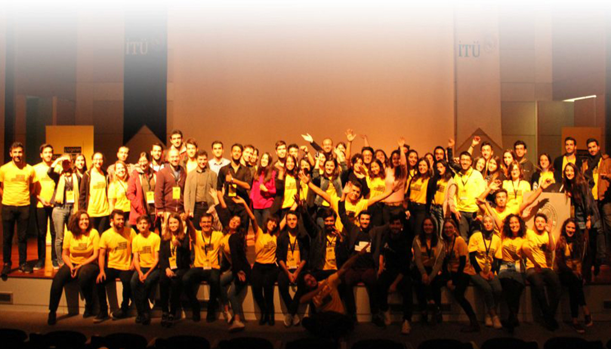

.jpg)
İyi Mi Olsun İstersiniz Yoksa Mükemmel Mi?
10 Aralık 2017
Yazar:
İTÜ Girişimcilik Kulübü olarak 16 Kasım’da “Çizginin Dışındakiler” etkinliğini organize etmiştik. Etkinliğin bize verdiği güzel bir ders vardı:
Biz kulüp olarak kurulduğumuzdan bu yana kalıplar ve sıradanlıklardan olabildiğince uzak durmaya çalıştık. O sebepledir ki artık klişeleşmeye başlayan, katılımcılara pek fayda sağlamayan namıdiğer “Zirve” etkinliğini kaldırmıştık. Bu sene onun yerine daha orijinal bir etkinlik olarak düşündüğümüz “Çizginin Dışındakiler”i organize ettik.
Çizginin Dışındakiler kalıplaşmış kariyer çizgisi yerine tutkuları yolunda kendi motivasyonu ile ilerlemiş kişilerin konuşmacı olduğu bir etkinliktir.
Biz bu etkinliğin en başından beri şunu düşüncedeydik: Bu etkinlik iyi bir etkinlik değil mükemmel bir etkinlik olmalıydı, hiçbir destek olmasa bile kendi üyelerimizin çabalarıyla bunun başarabilmeliydik. Hiçbir destek olmasa diyorum çünkü etkinliğe 24 gün kala biz bu işe başlıyorduk, etkinliği yetiştirebileceğimizin bile garantisi yoktu. İlk aşamada konuşmacıları etkinlik amacına uygun olarak özenle belirlemeye çalıştık. Sonrasında tanıtım görsellerini mükemmelleştirmeye çalıştık. Dışarıda ajanslar bu işi nasıl yapıyorsa biz de kulüp üyelerimizle bunu yapabilirdik, potansiyelimiz vardı. Nitekim de öyle oldu. Tanıtım kısmında özel olarak “Etkinlik Tanıtımı Çalıştayı” düzenledik. Hiçbir sponsorumuz olmadığını varsayarak çalışmalara başladık çünkü sponsor bulmamız için çok vaktimiz kalmamıştı. Tanıtımda az gün kalmasına rağmen ciddi bir kitleye ulaşmayı başarmıştık. Etkinlik kayıtları ve facebook etkinlik istatistiklerine göre ilk defa bu sene yapıyor olmamıza rağmen İTÜ’deki kulüplerin gelenekselleşen, güçlü sponsorlu etkinliklerinin önüne geçmiştik.
Etkinliği elimizden geldiğince çok kişiye ulaştırmayı hedef edinmiştik. Bunun için tanıtım kanallarımızı arttırmalıydık. Önce kampüs röportajları ile eğlenceli bir video ile geri planda etkinliğin mesajını vermiştik. Blog sayfamızda ilgi çekici içerikler üretip yine etkinliğin mesajını vermeye çalıştık. İçerik üretme, içerik pazarlama, mailing, gerilla pazarlama, bildiğimiz ne varsa denedik uyguladık. Bildiğimiz tanıdığımı yerlerden tanıtım desteği rica ettik. Hangi kanal verimli hangisi değil bunu deneyimlemiş olduk. Kayıtlar kapandıktan sonra ise kayıt olan herkesi evet herkesi aradık ve katılım durumlarını sorup etkinlik ile ilgili hatırlatma yaptık.
.jpg)
Etkinlik günü geldiğinde ise yine aynı şekilde her şeyin mükemmel olmasını istedik. Salonun dört bir tarafına kameralar koyup etkinliğin kaydını aldık. Etkinlik programı hassas bir şekilde ilerledi. Ekipler arasında iletişim ve koordinasyon harikaydı.
Katılım sayısı tek başına, etkinliğin başarı kriteri miydi?
Bu yazıyı size etkinliğimiz şahaneydi, harikaydı bunu bilin istedim diye yazmıyorum. Bunların yanında bizi hayal kırıklığına uğratan şeyler vardı. Telefonla aradığımız kişilerin yüzde sekseni etkinliğe katılacağını belirtmişti. Etkinlik günü salonun taşmasını bekliyorduk fakat öyle olmadı tabi. Katılım beklentimize göre sakindi. Bu benim moralimi bozmuştu açıkçası. Fakat etkinlik ilerledikçe sahneden insanlara baktım, onların dikkatini ve gözlerindeki ışığı gördüm. Kimse telefonlarıyla uğraşmıyordu. Neredeyse herkes etkinliğin sonuna kadar durmaya çalıştı. Normalde etkinliğin sonuna kadar kimse kalmaz ve salon boşalmaya başlar ama inanır mısınız en çok kalabalık etkinliğin sonunda vardı. O an durdum ve düşündüm: Katılım sayısı tek başına etkinliğin başarı kriteri miydi? Hayır o gün burada olanlar çok farklıydı. İnsanlar o kadar memnun kalmışlardı ve konuşmacılarımız katılanların hayatlarına o kadar iyi dokunabilmişti ki etkinliğin sonunda bize özel teşekküre gelen insanlar vardı.
O gün orada mükemmeli hedeflememizin sonucunu görmüştük. Salon dolup taşmadı fakat bizim hedefimiz yerini bulmuştu insanların hayatına dokunabilmiştik. Sonucu ne olursa olsun biz ekip olarak gayretlerimizi ortaya koymuştuk ve mühim olan da buydu. Mühim olan da bu olmalı zaten. Sonucunun ne olacağını düşünmeyip mükemmeli gerçekleştirmek için çalışmak…
.jpg)
Fırat Demirel’in bir televizyon programındaki kıssayı paylaştığı yazısı “Minber Kıssası” ile yazımı sonlandırmak istiyorum:
“Bir zamanlar Bağdat’ta ünlü bir marangoz varmış. Ömrünün ahir zamanında çok güzel bir minber oymuş. Ama çok güzel. Sedef kakmalı, ceviz ağacından. Alımlı mı alımlı. Her gören onun güzelliğiyle büyüleniyordu. Ve bu güzel minberin nâmı aldı yürüdü. Öyle ki Bağdat’a her gelen, ona gidip ‘Şu minberi bize sat, falanca camiye götürelim’ diyormuş. Onun verdiği cevap da hep aynı, “Hayır diyordu bu minber Mescid-i Aksa’da duracak”.
Ahali şaşırıyor tabii, “İyi de Kudüs Haçlı işgali altında”.
Marangoz yüksünmeden hep aynı cevabı veriyormuş;
“Benim elimden gelen bu. Ben zanaatkârım. Minber yontarım. Bir babayiğit de çıksın, Kudüs’ü geri alsın, bu minberi de yerine oturtsun.”
Derken bu minber hikayesinin konuşulmadığı hiçbir şehir kalmamış. Herkes minberin güzelliğini bire beş katarak birbirine anlatırken, aynı hikayeyi 7–8 yaşlarında bir çocuk da işitmiş. Ama o, eserin güzelliğinden ziyade, müessirin vasiyetine kulak vermiş.
Aradan 40 yıl geçmiş ve o minberi durması gereken yere, Mescid-i Aksa’ya yerleştirmiş. Diller onu Selahaddin-i Eyyubi diye anmış…”
Hakkımızda
İTÜ´de girişimcilikle ilgili gerek akademik düzeyde, gerekse öğrencilerin sosyal hayatlarında uygulamaya yönelik herhangi bir çalışmanın olmamasını çıkış noktası olarak gören kulübümüz 2006 yılından bu yana İTÜ’nün en aktif öğrenci oluşumlarındandır. Günümüze kadar İTÜ’de girişimcilik ekosisteminin gelişmesinde büyük katkı sağlamıştır.